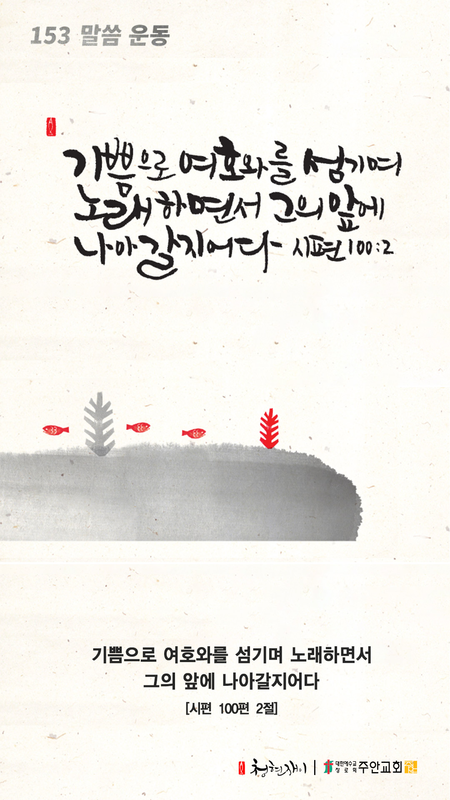

온라인 기도실 안내
2020년 11월01일(일)~11월07일(토)
- 온라인 기도실은 온 회중이 함께 하나님께 나아가는 자리입니다
- 30분 정도 여유를 갖고 하시길 바랍니다
- 말씀과 묵상, 찬양과 기도로 함께 합니다
- 배경 음악이 나올 수 있습니다 볼륨을 조절해주세요
준비가 되셨으면 아래의 버튼을 눌러주세요
찬양, 주의 성실을 찬양하리이다
(시71:22)
- 가사를 묵상하며 읽습니다
내 구주 예수를 더욱 사랑
엎드려 비는 말 들으소서
내 진정 소원이 내 구주 예수를
더욱 사랑 더욱 사랑
내 구주 예수를 더욱 사랑
엎드려 비는 말 들으소서
내 진정 소원이 내 구주 예수를
더욱 사랑 더욱 사랑
이 세상 떠날 때 찬양하고
숨질 때 하는 말 이것일세
내 진정 소원이 내 구주 예수를
더욱 사랑 더욱 사랑
찬양, 주의 성실을 찬양하리이다
(시71:22)
내 구주 예수를 더욱 사랑(314장) by 비컴퍼니
위의 찬양이 끝나면 말씀읽기를 눌러주시면 됩니다
말씀하옵소서, 주의 종이 듣겠나이다
(삼상3:10)
오늘의 말씀입니다
음악 소리가 크면 조절하시기 바랍니다

마음의 묵상
(시100:2)
“기쁨으로 여호와를 섬기며 노래하면서 그의 앞에 나아갈지어다”
1. 주님이 주시는 기쁨으로 충만하신가요?
2. 평소 입에서 찬양의 노래가 흘러나오나요?
3. 혹시 주님께 나아감에 있어 방해되는 것이 있나요?
기쁨으로 주님을 찬양합니다
회개, 삶의 방향을 바꾸는 결정
회개함 없이 주님 앞에 설 수 없습니다
주님의 인애와 긍휼을 의지합니다
“다만 가슴을 치며 이르되 하나님이여 불쌍히 여기소서 나는 죄인이로소이다”
- 누가복음 18장13절 -
3분 정도 회개하며 주님 앞에 나아갑니다
내 중심이 주를 간절히 구하오리니
- 다음의 기도문을 소리내어 읽습니다
고난 당하기 전에는 내가 그릇 행하였더니 이제는 주의 말씀을 지키나이다
주는 선하사 선을 행하시오니 주의 율례들로 나를 가르치소서
교만한 자들이 거짓을 지어 나를 치려 하였사오나 나는 전심으로 주의 법도들을 지키리이다
그들의 마음은 살져서 기름덩이 같으나 나는 주의 법을 즐거워하나이다
고난 당한 것이 내게 유익이라 이로 말미암아 내가 주의 율례들을 배우게 되었나이다
주의 입의 법이 내게는 천천 금은보다 좋으니이다
- 시편 119장 67-72절 -
하나님 나라
1. 하나님의 나라가 속히 이 땅에 임하게 하소서
하나님 아버지, 전 세계에 코로나 일일 확진자가 50만명이 넘는 재폭발이 일어나
각 나라가 봉쇄령을 내리고 이로 인한 경제적인 충격이 지구촌을 흔들고 있사오니,
인류의 죄악과 교만을 용서하시고, 우리를 죄와 사망가운데서 구원하소서.
간절한 마음으로 3분 정도 기도합시다
남과 북
2. 남북한이 속히 복음으로 통일되게 하소서
하나님 아버지, 동방의 예루살렘이었던 평양에 복음의 씨앗이 다시 뿌려지게 하시고,
복음의 능력 앞에 불의한 정권이 무너지고 의로운 정권이 세워져 한반도에 참된 평화가 이루어지게 하소서.
간절한 마음으로 3분 정도 기도합시다
대한민국
3. 우리나라가 하나님을 경외하는 나라가 되게 하소서
하나님 아버지, 우리나라의 종교(교회), 정부, 가정, 교육, 미디어(언론), 예술(연예),
그리고 경제의 7대 영역에 성령의 기름 부으심의 역사가 있게 하시고,
이를 통하여 우리나라에 하나님의 나라가 확장되게 하소서.
간절한 마음으로 3분 정도 기도합시다
한국교회
4. 한국교회가 성령으로 새롭게 부흥되게 하소서
하나님 아버지, 각종 우상숭배(돈, 권력 등)와 교파주의, 개교회주의, 목회세습 등으로 얼룩진 한국교회가 회개하고
성령의 능력으로 개혁되어, 교회의 본질을 회복하게 하소서.
간절한 마음으로 3분 정도 기도합시다
주안교회
5. 주안교회가 선교적 삶으로 세상을 섬기고 치유하게 하소서
하나님 아버지, 주안의 성도들이 날마다 세미한 음성으로 우리에게 말씀하시는 하나님의 음성에 귀를 기울이게 하시고,
그 말씀에 순종하므로 승리하는 선교적 삶을 살게 하소서.
간절한 마음으로 3분 정도 기도합시다
감사의 기도
- 오늘 기도를 인도하신 주님께 감사를 올려드립니다
- 아래의 구절을 읽고 주님께 감사의 마음을 올려드립시다
“내가 환난 중에서 여호와께 아뢰며 나의 하나님께 아뢰었더니 그가 그의 성전에서 내 소리를 들으심이여 나의 부르짖음이 그의 귀에 들렸도다”
- 사무엘하 22장 7절 -
고요한 가운데 잠시 침묵하시기 바랍니다
파송, 세상을 향하여
- 오늘의 온라인 기도를 마쳤습니다
기도를 들으신 주님께서 평안히 가라 하십니다
주님께서 우리와 함께 하시니 두려울 것이 없습니다
새벽을 깨우며
- 새벽기도회 안내입니다